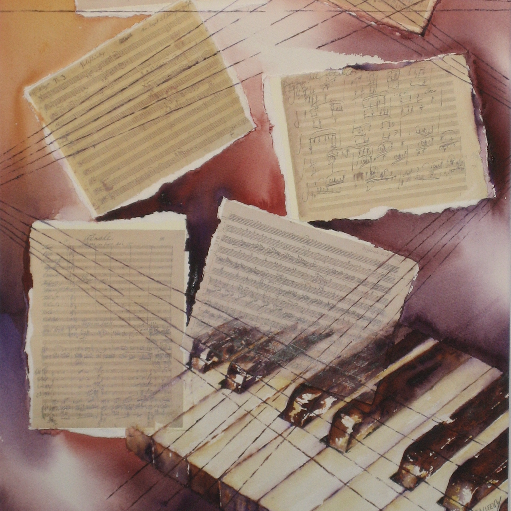
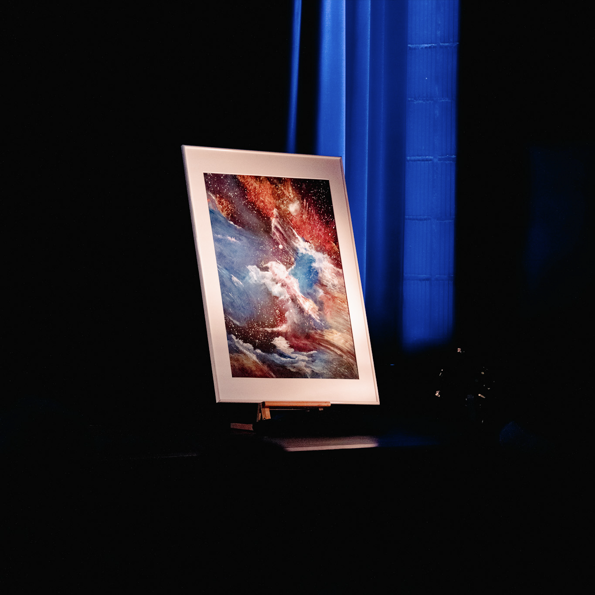

THE SOUL AND VISIONARY
Magda Calleeuw
Founder of the CFIPC - Painter - Visionary
A Life Dedicated to Art
Magda Calleeuw was the driving force behind the César Franck International Piano Competition (CFIPC) and a defining figure in the Belgian cultural landscape. As both a painter and a cultural leader, her life was a vibrant tapestry woven from visual art, music, and a profound dedication to the next generation of performers.
As the founder and first President of the CFIPC, Magda was far more than a director; she was the spiritual heart of the competition. She infused the event with a warmth and artistic integrity that came to define its very character.
Guided by the belief that art should be a shared, living experience, she created a platform where young pianists from around the globe could find not only a stage for their talent, but a home for their creative growth. Through her unwavering resolve and infectious energy, she transformed a personal dream into a prestigious global reality that continues to resonate in the hearts of musicians worldwide.


Architect of Community
Beyond her personal artistry, Magda was a tireless architect of community and culture. Her leadership spanned from the chairmanship of the Culture Council in Kraainem to the presidency of the International Music Festival and Competition in Paris. In every role, she moved with an unwavering willpower that turned ambitious visions into reality.
Whether she was mentoring students at the GC de Lijsterbes or coordinating world-class international juries, her approach was always grounded in a deep respect for the artist’s journey. She understood that the pursuit of excellence required both rigorous discipline and a supportive, nurturing environment - a philosophy that remains the foundational pillar of the CFIPC today.
Though Magda Calleeuw passed away in late 2020, her legacy remains a vivid and guiding light for all who step onto our stage. She did not merely build a competition; she fostered a global family of musicians united by the same passion that fueled her own life. To look upon her paintings or to hear the opening notes of a CFIPC recital is to encounter her spirit anew .
THE PAINTER'S STORY
Anecdotes about the Works
PICTURES AT AN EXHIBITION
This intrinsic connection between the brush and the keyboard reached its pinnacle in her celebrated collaboration with her son, the pianist Philippe Raskin. In a landmark project, she created five original paintings to interpret the lost visual inspirations of Mussorgsky’s suite, effectively completing the sensory circle the composer had envisioned over a century ago.
LYRICAL ABSTRACTION
Her canvases were known for their ethereal depth, often reflecting a state of synesthesia where colors seemed to vibrate with the resonance of a musical chord. She sought to capture the "inner space" of human emotion, proving that the boundaries between sight and sound are beautifully porous.
THE ARTIESTENPARCOURS
As Chair of the Culture Council, Magda spearheaded initiatives like the Artiestenparcours to bring art directly into the lives of the public. Her tireless advocacy meant that art was never a static object in a gallery but a living, breathing part of the community in Kraainem and beyond.
The Artistic Vision



